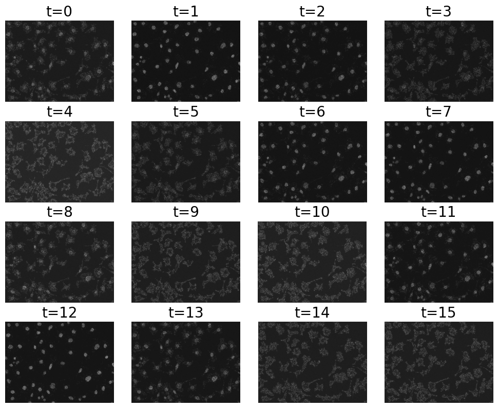
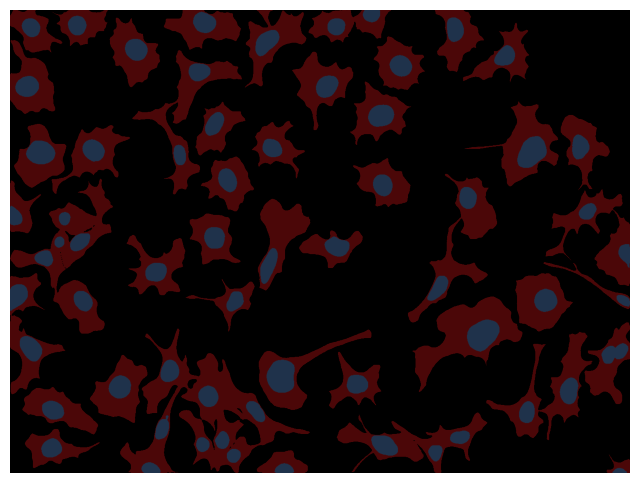
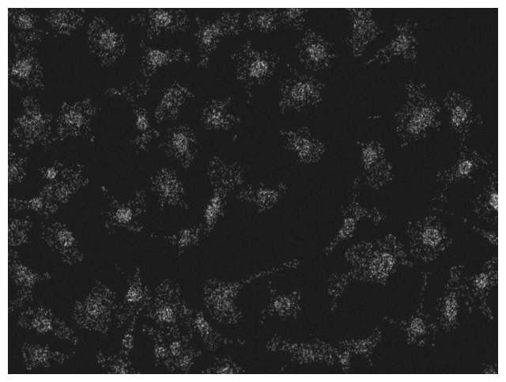
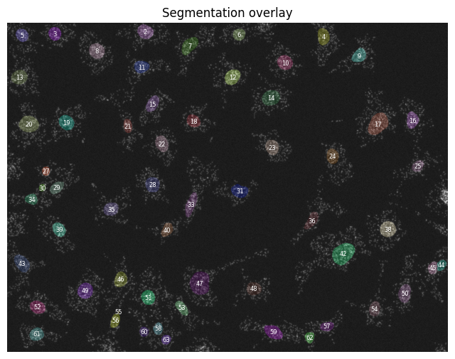
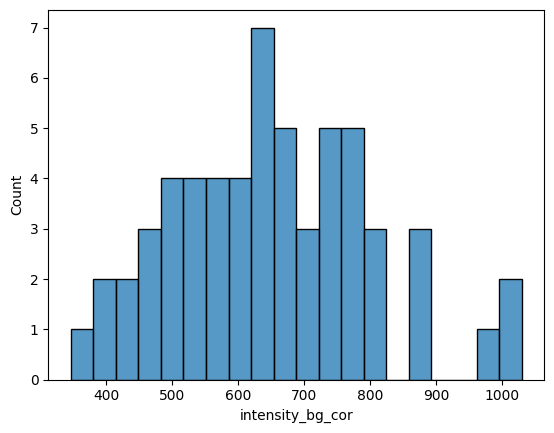
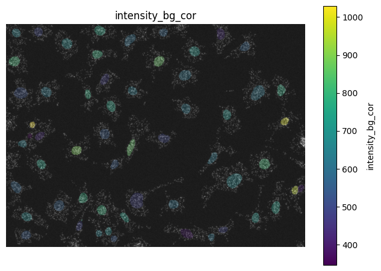
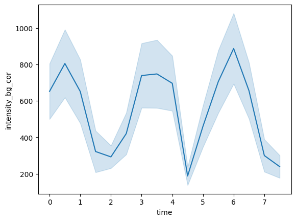
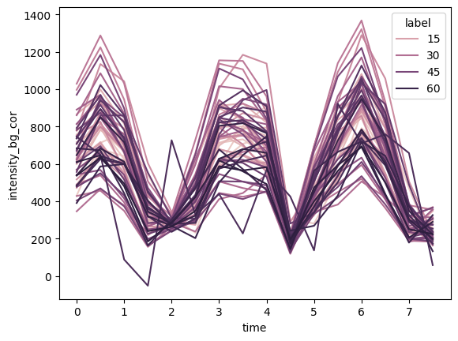

Time series analysis#
# /// script
# requires-python = ">=3.10"
# dependencies = [
# "matplotlib",
# "numpy",
# "scikit-image",
# "scipy",
# "tifffile",
# "imagecodecs",
# "pandas",
# "seaborn",
# "bobiac_tools @ git+https://github.com/bobiac/bobiac-tools.git"
# ]
# ///
from pathlib import Path
import matplotlib.pyplot as plt
import pandas as pd
import seaborn as sns
import skimage
import tifffile
from bobiac_tools import overlay_labels
Overview#
In this notebook, we analyse time resolved data.
We have data of cells where the location of our gene of interes oscillates between the nucleus and the cytoplasm. Our question is What is the frequency of the oscillations?
We have a total of 16 time points with a temporal spacing of 30 min (🤔). The background of the images was measured to be 4700.
You can find the data here.
Step 3#
Create a new code cell in the notebook.
Download the dataset folder that contains the time-lapse file
F01_1615_tcyx.tif.For the
F01_1615_tcyx.tiffile, display the first eight time points of the last channel in the as a grid of images.In the same dataset folder, there is a
F01_1615_tcyx_cell_labels.tiffile (labeled mask of the cells) and aF01_1615_tcyx_nuclei_labels.tiffile (labeled mask of the nuclei). Visualize these masks as an overlay
image_path = Path("../../_static/images/quant/03_time_series/images/F01_1615_tcyx.tif")
time_stack = tifffile.imread(image_path)
print(f"Time stack shape: {time_stack.shape}") # (16, 3, 1040, 1392)
t_max = time_stack.shape[0]
ch = 2 # channel index for the oscillating gene of interest
fig = plt.figure(figsize=(10, 8), layout="constrained")
for t in range(t_max):
image = time_stack[t, ch, :, :]
plt.subplot(4, 4, t + 1)
plt.imshow(image, cmap="gray")
plt.title(f"t={t}", fontsize=20)
plt.axis("off")
plt.show()
Time stack shape: (16, 3, 1040, 1392)

These are the first eight time points.
mask_cells = tifffile.imread(
"../../_static/images/quant/03_time_series/masks/F01_1615_tcyx_cell_labels.tif"
)
mask_nuclei = tifffile.imread(
"../../_static/images/quant/03_time_series/masks/F01_1615_tcyx_nuclei_labels.tif"
)
overlay_labels(label_mask=[mask_cells, mask_nuclei])

(<Figure size 800x800 with 1 Axes>, <Axes: >)
This are the two label masks for the nuclei and the cells.
Step 4#
Measure nuclear intensity for the first time point
In this step, you will analyse the first image and quantify the intensity of each nucleus.
Load the first time point of the last channel in the
F01_1615_tcyx.tiffile.Remove objects touching the border of the image.
Measure the intensity of each nucleus with
skimage.measure.regionprops_table.Subtract the background intensity from the measurements and inspect the resulting values.
1. Measure nuclear intensity for the first time point#
First, we measure the intensities of all the nuclei in the image.
Load the first time point.
ch = 2 # channel index for the oscillating gene of interest
image_t0 = time_stack[0, ch, :, :]
overlay_labels(image=image_t0)

(<Figure size 800x800 with 1 Axes>, <Axes: >)
Remove boundary objects.
mask_nuclei = skimage.segmentation.clear_border(mask_nuclei)
overlay_labels(image=image_t0, label_mask=mask_nuclei)

(<Figure size 800x800 with 1 Axes>,
<Axes: title={'center': 'Segmentation overlay'}>)
Measure intensities with regionprops_table ans save measurements as DataFrame.
properties = ["area", "intensity_mean", "label"]
props = skimage.measure.regionprops_table(
mask_nuclei, intensity_image=image_t0, properties=properties
)
df_nuc = pd.DataFrame(props)
print(df_nuc)
area intensity_mean label 0 1869.0 1219.043339 2 1 1430.0 948.851748 3 2 1681.0 891.096371 4 3 1356.0 1117.834071 5 4 1232.0 1028.202110 6 5 2114.0 1058.964049 7 6 1954.0 1140.899693 8 7 1576.0 1024.806472 9 8 1862.0 1176.601504 10 9 1555.0 1250.140836 11 10 1945.0 1325.883290 12 11 1948.0 1274.267967 13 12 2307.0 1073.438231 14 13 1599.0 931.551595 15 14 1646.0 1237.678007 16 15 3380.0 1080.149112 17 16 1440.0 1092.085417 18 17 1880.0 1091.045213 19 18 2691.0 976.980676 20 19 1030.0 1240.002913 21 20 1716.0 1213.378205 22 21 1696.0 1083.852005 23 22 1540.0 1165.322727 24 23 1086.0 1456.955801 25 24 618.0 1489.451456 27 25 1847.0 998.479697 28 26 1329.0 888.212190 29 27 438.0 806.287671 30 28 1825.0 950.421370 31 29 1913.0 1320.894929 33 30 1123.0 1105.219056 34 31 1664.0 1350.731971 35 32 1547.0 1082.393019 36 33 2081.0 1273.842864 38 34 1499.0 1207.787859 39 35 1279.0 1003.185301 40 36 3761.0 1127.747939 42 37 2040.0 1029.764216 43 38 829.0 864.540410 44 39 968.0 1430.487603 45 40 1639.0 1242.480171 46 41 3799.0 937.245591 47 42 1645.0 1066.477204 48 43 2022.0 1017.343225 49 44 1892.0 1197.726216 50 45 1673.0 1253.115959 51 46 1644.0 1135.153893 52 47 1275.0 1196.524706 53 48 1362.0 1168.959618 54 49 44.0 1205.840909 55 50 1095.0 942.811872 56 51 1056.0 944.766098 57 52 961.0 1143.874089 58 53 2026.0 850.837611 59 54 785.0 1107.979618 60 55 1543.0 998.966948 61 56 878.0 1070.775626 62 57 776.0 998.304124 63
Subtract background intensity from measurements. Background was measured to 460.
background_intensity = 460
df_nuc["intensity_bg_cor"] = df_nuc["intensity_mean"] - background_intensity
print(df_nuc["intensity_bg_cor"].head())
print(
"\nAre there any negative values after background subtraction?",
(df_nuc["intensity_bg_cor"] < 0).any(),
)
0 759.043339 1 488.851748 2 431.096371 3 657.834071 4 568.202110 Name: intensity_bg_cor, dtype: float64
Are there any negative values after background subtraction? False
Step 5#
Perform quality control and analyse all time points
Now you will turn the workflow into a batch analysis over all 16 images.
Check the measurements for artifacts, for example by plotting the distribution of background-corrected intensities.
Overlay the measured values on the image and inspect whether any nuclei look suspicious.
Loop through all time points, measure the intensity of each nucleus, and add a
timecolumn.Combine all measurements into a single
DataFrame.
Quality control on background-corrected intensities#
sns.histplot(
data=df_nuc,
x="intensity_bg_cor",
bins=20,
)
<Axes: xlabel='intensity_bg_cor', ylabel='Count'>

Seems unsuspicious.
overlay_labels(
image=image_t0,
label_mask=mask_nuclei,
df=df_nuc,
id_col="label",
measurement_col="intensity_bg_cor",
)

(<Figure size 800x800 with 2 Axes>,
<Axes: title={'center': 'intensity_bg_cor'}>)
Looks fine.
Batch processing#
Add time column.
t = 0 # index of the first time point in the stack
time = t * 0.5
print(time)
0.0
df_nuc["time"] = time
list_df = []
for t in range(t_max):
image = time_stack[t, ch, :, :]
props = skimage.measure.regionprops_table(
mask_nuclei, intensity_image=image, properties=properties
)
sdf = pd.DataFrame(props)
sdf["intensity_bg_cor"] = sdf["intensity_mean"] - background_intensity
sdf["time"] = t * 0.5
list_df.append(sdf)
df = pd.concat(list_df)
print(df)
area intensity_mean label intensity_bg_cor time 0 1869.0 1219.043339 2 759.043339 0.0 1 1430.0 948.851748 3 488.851748 0.0 2 1681.0 891.096371 4 431.096371 0.0 3 1356.0 1117.834071 5 657.834071 0.0 4 1232.0 1028.202110 6 568.202110 0.0 .. ... ... ... ... ... 53 2026.0 592.803060 59 132.803060 7.5 54 785.0 681.891720 60 221.891720 7.5 55 1543.0 659.832793 61 199.832793 7.5 56 878.0 750.211845 62 290.211845 7.5 57 776.0 684.514175 63 224.514175 7.5 [928 rows x 5 columns]
Step 6#
Visualise the oscillations and estimate the frequency
In this final step, you will answer the main question: what is the frequency of the oscillations?
Use
sns.lineplotto visualise the intensity of each nucleus over time.Add a second plot showing the average signal across cells.
Estimate the oscillation frequency from the pattern you observe.
Write a short conclusion in a markdown cell.
Plotting#
df.groupby(["label", "time"])["intensity_bg_cor"].mean().reset_index()
| label | time | intensity_bg_cor | |
|---|---|---|---|
| 0 | 2 | 0.0 | 759.043339 |
| 1 | 2 | 0.5 | 876.869984 |
| 2 | 2 | 1.0 | 658.683788 |
| 3 | 2 | 1.5 | 260.720171 |
| 4 | 2 | 2.0 | 283.440342 |
| ... | ... | ... | ... |
| 923 | 63 | 5.5 | 562.300258 |
| 924 | 63 | 6.0 | 695.213918 |
| 925 | 63 | 6.5 | 501.601804 |
| 926 | 63 | 7.0 | 250.744845 |
| 927 | 63 | 7.5 | 224.514175 |
928 rows × 3 columns
sns.lineplot(data=df, x="time", y="intensity_bg_cor", errorbar="sd")
<Axes: xlabel='time', ylabel='intensity_bg_cor'>

sns.lineplot(data=df, x="time", y="intensity_bg_cor", hue="label")
<Axes: xlabel='time', ylabel='intensity_bg_cor'>
